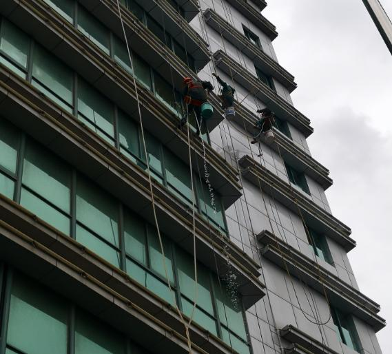

外墙清洗方案
施工的主要程序
1、找好水源，安装、调试好清洗机器，连接好冲洗水管，选择好外墙分块下放地点。
2、放下外墙安全主绳和副绳，上端找好固定点、没有固定点的采用100公斤以上的配重栓牢，下端和地面接触。
3、把操作平板固定在主绳上，安全带分别系在主绳和副绳上，清洗工人系上安全带，坐在操作平板上，外墙药水系在外墙操作平板上。
4、工人用抹水器把对好水外墙以及幕墙清洁剂均匀的抹在外墙和幕墙上来回擦洗后用水把墙面冲洗干净。
外墙清洗方法
根据现场情况采用高空绳、吊板作业方法进行清洗，局部配合使用升降设备，灵活快捷、不占用场地、干扰小，主要清洗步骤如下：
第一遍水洗：先用清洗剂对相应材料、污垢进行清洗。
水洗程序：
l 用水管将外墙面上的浮尘冲掉；
l 用涂水器将清洗剂均匀涂在外墙上，并反复擦洗；
l 用清水将污垢冲洗干净；
第二遍刮洗：再对玻璃幕采用刮洗，以保持其光洁明亮。
刮洗程序：
l先用涂水器将清洗剂均匀涂在玻璃幕表面，并擦洗；
l用玻璃刮将玻璃表面刮净；
l用毛巾将玻璃窗框及密封胶擦干净；

人员分配
1、现场项目经理1名，负责具体工作安排、安全监督及与甲方协商工作相关事宜；
2、每名主管分管监督1个施工小组，负责安全保障及质量把关；
3、每个工作小组由施工队长1名，负责现场施工指挥，安全员2名,各负责楼顶工作区域和地面安全区域的安全检查工作，高空作业人员10人负责实际清洗作业，共13人组成，
施工工艺
1、铝板清洗：上水器沾稀释的铝板清洗液,来回涂擦铝板表面及接缝处至污渍脱落后,玻璃刮刮净表面污水,干毛巾擦净接缝处；
2、玻璃清洗:上水器沾稀释的玻璃清洗液涂擦玻璃表面及铝合金窗框,玻璃刮刮净表面污水,干毛巾擦净窗框及窗框周边接缝处和窗台。
3、石材清洗：上水器沾中性清洁剂涂擦石材表面,玻璃刮刮净污水或高压水冲净墙面污渍,毛巾擦净石材接缝处污渍。
工作流程
1、由该项目现场负责人与甲方指定负责人协调办理作业队进场的所有相关手续；
2、作业队由现场施工负责人带领,从甲方指定的出入口进入施工现场；
3、由现场负责人对现场施工的周围环境进行安全勘察,并对施工队进行口头或书面形式的安全交底；
4、作好施工现场安全区域的防护隔离措施；
5、地面安全区域的安全员就位,按放施工标识,提醒来往行人及车辆,以免第三者责任事故发生；
6、楼顶安全员检查主副绳的固定处及承重处的牢固性；
7、作业人员放好主副绳,做好安全防护后由安全员检查,如有安全隐患必须整改后方可作业；
8、每个作业人员的作业量横跨度2米,由上往下进行施工；
9、每天的工作顺序由负责人与甲方指定负责人协商后安排；
10、所有清洗工作完毕,由我方进行自我质量检查合格后,申请甲方负责人验收,不合格处应立即返工至甲方满意为止。
文明施工现场管理
公司所属人员必须遵守甲方相关规章制度，违者由甲、乙双方协商处罚。
1、不得在施工现场吸烟；
2、守甲方规定的工作时间；
3、用甲方指定的卫生间；
4、遵守甲方对施工现场的各项规定及安全防火要求(细则见岗位责任制纪律要求)
5、不得酒后上班；
6、不得打架斗殴；
7、清洗的材料，要放在指定的地方，并放置整齐
施工期限
自合同签订生效之日起施工周期不超过20日历日，如在施工过程中,甲方有特殊情况需要缩短工期,应提前五天通知,我公司有义务按甲方的要求按时竣工.
现场施工成品保护
1、使用刀片进行开荒工作时必须保证刀片锋利无缺口破损。
2、未作业的的施工点不得开水阀，以避免水管漏水
安全操作规程与步骤
l、作业前必须认真检查机械设备、用具、绳子、坐板、安全带有无损坏，确保机械性能良好及各种用具无异常现象方能上岗操作。
2、操作绳、安全绳必须分开生根并扎紧系死，靠沿口处要加垫软物，防止因磨损而断绳，绳子下端一定要接触地面，放绳人同时也要系临时安全绳。
3、施工员上岗前要穿好工作服，戴好安全帽，上岗时要先系安全带，再系保险锁（安全绳上），尔后再系好卸扣(操作绳上），同时坐板扣子要打紧，固死。
4、下绳时，施工负责人和楼上监护人员要给予指挥和帮助。
5、操作时辅助用具要扎紧扎牢．以防坠伤人，同时严禁嘻笑打闹和携带其它无关物品；
6、楼上、地面监护人员要坚守在施工现场．切实履行职责．随时观察操作绳、安全绳的松紧及绞绳、串绳等现象，发现问题及时报告，及时排除。
7、楼上监护人员不得随意在楼顶边沿上来回走动。需要时，必须先系好自身安全绳，尔后再进行辅助工作。地面监护人员不得在施工现场看书看报，更不得随意观赏其它场景。并要随时制止行人进入危险地段及拉绳、甩绳现象发生。
8、操作绳、安全绳需移位、上下时，监护人员及辅助工人要一同协调安置好，不用时需把绳子打好捆紧。
9、施工员要落地时，要先察看一下地面、墙壁的设施，操作绳、安全绳的定位及行人流量的多少情况，待地面监护人员处理、调整，同意后方可缓慢下降，直至地面。
10、要坚持安全第一、文明施工，确保工程服务质量。
11、不准乱拿甲方或客户的物品，不得损坏甲方或客户的各种设施。
12、高空作业人员和现场监护人员必须服从施工负责人的统一指挥和统一管理。
安全管理
一、清洗规程
l 吊板清洗准时到作业现场，接受班长的工作安排。
l 在作业下方用红绳围住，并放置警示牌；检查作业面上有无影响清洗的问题（如窗户是否关好）；盖好绿化、车辆等须保护的东西；对不能遮盖的应及时冲冼干净。
l 辅助工接好水源、电源，并试验设备是否正常，并确定风向。
l 班长监督操作工检查绳、保险绳、自锁器、座板、水枪等是否正常。根据工作安排，2人一组，开始放绳，放绳时必须有人监护。
l 辅助工协助班长根据清洗要求及墙的污染情况，分配药水。
l 操作工穿好雨衣雨裤，并检查工具材料是否齐全，绑扎是否牢固。在辅助工的帮助下，上座板开始作业。
l 按预先清洗方案仔细清洗，清洗工作中发现问题隐患（如清洗剂选用不当，墙面褪色；墙面脏物清洗不净；玻璃瓷片松动等到），应及时报告班长。
l 每吊落地后，应及时处理掉下物，多余的药水应集中倒回药水桶内，不得随意倒弃，不能用的药水应集中处理。
l 清洗时应保持屋面整齐，工具材料不能随意乱放。
二、安全措施
l 高空作业面下方严禁有人，在下方半径5米内用红绳围住，并竖立警告牌。
l 高空工必须系保险绳、安全带穿防滑鞋，必要时应戴安全帽，辅助工必须戴安全帽。
l 高空作业工具（如水枪等）必须系工具安全绳，以防跌落伤人，刷子、铲子等工具必须仔细使用以防跌落。
l 清洁外墙时必须检查住户窗户门是否关好，以防污染住户室内。
l 放绳前必须检查绳索，放绳时，如视线不能直接看到下落点，则须在地面派人监护，并用对讲机联系，放绳、收绳作业人员必须系好安全带。
l 绳各支点处，必须加软垫，以免损坏建筑表面及绳本身。
l 辅助工须随时监护工作绳、安全绳、绳支架、绳结的牢固性等有关的安全工作。
l 同组作业人员上下落差不应大于5米。
l 落地后清理落下物量时吊绳固定，不能随其提动。吊板、绳索与药水桶应分别解开，御下。
l 清洁屋面、边角地方时必须要系安全绳，严禁随意跨跃屋面。
l 每天下完吊后，应将绳绑扎好，连续下雨或强风时，应将绳收起并放在安全处。
l 严禁空中抛物，弃物，随身带的物品必须绑扎牢固。
l 高空作业人员必须集中思想专心工作，严禁嘻笑。
l 大风（5级以上）、下雨天气严禁进行清洗工作。
l 身体不适者，严禁强行高空作业。
l 结外墙面、窗台上的杂物，必须放入桶中，严禁直接丢弃。
三、现场保护措施
l 由于大厦周边的行人较多，针对此情况我司将正在清洗的楼层面用警示牌、红线围起；
l 用彩条布将正在清洗的楼层周边的绿化遮盖；
l 屋面、地面各安排一名辅助人员进行巡视，及时了解情况；
l 因高空作业清洗时沟通比较困难，我司在清洗时使用对讲机，可以有效的进行沟通，和了解情况；
l 为保护好大厦外墙面，我司在清洗放绳时用地毯把绳子和外墙面隔离。
四、安全制度
1、进入施工现场人员必须穿工服、佩带施工证，并进入制定的区域。
2、施工人员在现场不会见亲朋好友。
3、施工人员接受现场保卫部检查。
4、施工人员不得擅自接电，必须通过现场指定电工。
5、施工人员禁止在现场吸烟、喝酒、留宿、喧哗、打闹等。
6、施工现场不得存放易燃物。
7、施工时必须有安全员在现场指挥、监督。
8、每日开工之前检查好大绳、吊板、安全带，保险设施。
9、登高时必须系安全带，系好安全带后，经过安全员检查合格上岗操作。
10、放绳时必须有两人操作，放绳时细心检查、特别是主绳，每次必须放两根绳，一根主绳、另一根保险绳，检查保险绳时注意到滑锁符合安全。
五、外墙清洗作业人员《安全操作规程》
1、作业者必须是18-45周岁的男性公民，且经过专门技术训练，懂得吊板搭架的工作原理及性能，经考试合格方可上岗作业。
2、作业者必须经过身体检查和定期检查，确认无疾病后方可进行工作。
3、作业者操作时应选好锚点并确认锚点的牢固性，必须设主绳、附绳各一根且配有安全带等装置。
4、作业者在工作期间严禁喝酒和嘻笑，更不准在跺板上打闹或投掷物品。
5、作业者在工作期间必须穿工作服，戴安全帽及手套，系好安全带（包括室内活窗内的清洁人员）。绝不允许在无任何安全保障下执行作业。
6、作业者如遇身体不适或没休息好，不得参加高空作业。
7、作业前应选好锚点，确认锚点安全、牢固。
8、作业前应在现场将吊板装好并由专人进行案例检查，对吊板各部位：吊板紧软固件、连接件、大绳、案例保护装置、保护绳、工具等要逐一检查，确认无隐患后方可工作。
9、作业前对铁架结构，悬挂装置的联接件、紧固件、系绳点进行检查，确认无隐患后方可工作。
10、在作业中严禁修理或移动悬挂机构及解系绳等。
11、在工作时要使踏板稳定，以防大的晃动；在四级风以上，如风向对踏板有影响应停止工作。
12、雨天应将各部位防护好，以防漏电，湿滑，并经常检查大绳的破损情况。
13、指挥人员必须集中精力从事专项指挥工作，不得兼做其他工作。
14、爱护设备及工具、大绳，安全带每工作24小时检查一次，悬挂大绳每56小时全面检查一次，全套设备每周检查一次。
15、作业后应将工具、器具进行清洗和晾晒，不准乱扔、乱放，按指定位置集中放置。
16、作业后应将吊绳悬挂在安全地点，并上好安全锁，防止损坏其他物品。
17、作业人员衣着要整齐，工作服要经常洗换。
18、作业人员必须听从指挥，严格执行操作规程，认真作好本职工作。并在作业时查看周围作业人员，相互提醒及监督保持安全状态。
19、高空作业人员在作业时，应注意不要碰撞及损坏周边物体，作业工具及被清洁物妥善放置，不得掉下，以免损坏地面物体及造成人员伤亡。
20、安全员应随时观察操作人员工作状态，并随时检查顶部及地面安全情况，有问题及时解决，排除不安全隐患。
21、高空操作时，设备固定处有专人看管。
22、地面上设告示牌并派专人指挥车辆及行人以确保安全。
五、高处坠落事故应急预案
当发生高处坠落事故后，抢救的重点放在对休克、骨折和出血上进行处理。
1、发生高处坠落事故，应马上组织抢救伤者，首先观察伤者的受伤情况、部位、伤害性质，如伤员发生休克，应先处理休克。遇呼吸、心跳停止者，应立即进行人工呼吸，胸外心脏挤压。处于休克状态的伤员要让其安静、保暖、平卧、少动，并将下肢抬高约20度左右，尽快送医院进行抢救治疗。
2、出现颅脑外伤，必须维持呼吸道通畅。昏迷者应平卧，面部转向一侧，以防舌根下坠或分泌物、呕吐物吸入，发生喉阻塞。有骨折者，应初步固定后再搬运。偶有凹陷骨折、严重的颅底骨折及严重的脑损伤症状出现，创伤处用消毒的纱布或清洁布等覆盖伤口，用绷带或布条包扎后，及时送就近有条件的医院治疗。
3、发现脊椎受伤者，创伤处用消毒的纱布或清洁布等覆盖伤口，用绷带或布条包扎。搬运时，将伤者平卧放在帆布担架或硬板上，以免受伤的脊椎移位、断裂造成截瘫，招致死亡。抢救脊椎受伤者，搬运过程，严禁只抬伤者的两肩与两腿或单肩背运。
4、发现伤者手足骨折，不要盲目搬运作者。应在骨折部位用夹板把受伤位置临时固定，使断端不再移位或刺伤肌肉、神经或血管。固定方法：以固定骨折处上下关节为原则，可就地取材，用木板、竹头等，在无材料的情况下，上肢可固定在身侧，下肢与腱侧下肢绑在一起。
5、遇有创伤性出血的伤员，应迅速包扎止血，使伤员保持在头低脚高的卧位，并注意保暖。正确的现场止血处理措施：
（1）一般伤口小的止血法：先用生理盐水（0.9%溶液）冲洗伤口，涂上红汞水，然后盖上消毒纱布，用绷带较紧地包扎。
（2）加压包扎止血法：用纱布、棉花等作成软垫，放在伤口上再加包扎，来增强压力而达到止血。
（3）止血带止血法：选择弹性好的橡皮管、橡皮带或三角巾、手巾、带状两条等，上肢出血结扎在上臂上1/2处（靠近心脏位置），下肢出血结扎在大腿上1/3处（靠近心脏位置）。结扎时，在止血带与皮肤之间垫上消毒纱布棉纱。每隔25－40分钟放松一次，每次放松0.5－1分钟。
6、动用最快的交通工具或其它措施，及时把伤者送往邻近医院抢救，运送途中应尽量减少颠簸。同时，密切注意伤者的呼吸、脉搏、血压及伤口的情况。
部门主管（或经理）全面负责事故调查与分析，记录事故调查的结果，完成有关整改条款。